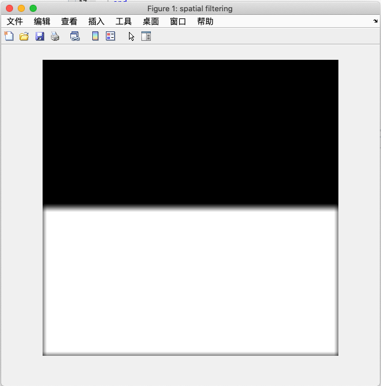

Filtering-in-Frequency-Domain-Using-MATLAB
本文首先介绍了一些频域滤波中最常用的几个matlab函数，然后强调了一定要明白循环卷积是如何产生的以及如何避免的。在滤波器获取分别使用了两种方法进行获取操作，其中最重要的是从频域直接获取的方法。最后分别介绍了低通、高通、选择、notch滤波器及其配套的生成、滤波代码和例子。
频域滤波中基本函数
matlab中计算图像的傅立叶变换使用：
1 | F = fft2(f); |
接受三个参数的fft2在频率滤波更为常用，函数先将图像f进行zero-padding到指定P,Q尺寸后再进行傅立叶变换。zero-padding可以加快fft计算并且能够避免循环卷积。关于循环卷积的更多内容，在文章中有描述.
对于一个实数图像f，执行fft2输出一定是复数(在文章中有证明)。因此可知F在matlab中的属性为complex single。为了得到这个复数的强度和相位使用：
1 | S = abs(F); |
回顾频域分析，傅立叶变换的幅度代表的是图像中的亮度，而相位代表的是图像中物体的空间位置。通常从视觉上看，幅度图包含的信息更容易理解，而相位图的信息不易理解但更为重要。由于相位图决定了物体的空间位置信息，因此在通常的频率滤波中我们期望不改变相位图信息，否则一旦相位图改变，可能图像滤波后会输出完全错误的信息。不改变相位图的滤波器被称为零相移滤波器。
如果我们已知了复数F的强度S和相位phi，那么根据复数的表达，我们可以重新得到复数F:
1 | F = S.*exp(i * phi); |
例子1:强度图和相位图的含义
图1的上面两个图像是除中间白色矩形位置不同外完全一样的图像。利用matlab分别对两个图像进行傅立叶变换并输出强度和相位图依次得到下面四张图像。可以看到在强度图上，二者完全类似，但在相位图上二者表现出完全不一样的特点。这直接说明了相位图描述了原图像中物体的位移，强度描述了原图像中的亮度。
例子1
经过函数fft2计算得到的频域图，在之前的文章已经知道是频率起点在左上角，向着图像中心位置递增的频率分布。这种频率分布不利于视觉上的分析，因此我们常常移动频域图像使得图像中心位置为频率起点，频率向四周扩散.这个移动过程使用：
1 | Fc = fftshift(F); |
上述函数fftshift是通过平移实现以中心位置为频率起点的，这个频移的原理在之前的文章有提到。现在我们重点关注什么是中心位置？对于连续的函数而言中心位置不难定义，但是对于离散的图像而言，中心的概念就很重要了，重要性主要体现在以下几个方面：
确定中心像素位置，类似
fftshift的函数才有执行的依据之后创建的滤波器大多都是中心对称，那么中心在哪里非常重要
图像的尺寸可能是矩形的，可能是方形的，可能尺寸是奇数像素的，也可能是偶数像素的，中心位置的明确很有意义
我们按照不同的矩阵计数规则来分别解释。假如将尺寸为\(M \times N\)的图像导入到从0开始计数，到M-1和N-1为止的环境中，中心元素定义为在\((M/2,N/2)\)位置处的元素。比如尺寸为8x8，那么中心元素在(4,4)：中心元素为第五个元素。再比如奇数尺寸7x7，中心元素为(M/2,N/2)的floor : (3,3)。由于C语言整型除法就已经是floor后的整数了.对于奇数尺寸，这个中心元素为第四个元素。C中计算中心位置通用公式为:
1 | int M,N; |
如果是matlab环境，从1计数，到M和N为止，在偶数尺寸时，比如8x8，那么中心元素在(5,5)，中心元素为第五个元素；在奇数尺寸时，比如7x7，那么中心元素在(3,3)，中心元素为第四个元素。可以看到，中心元素的位置其实和C是一样的，只是角标的区别。matlab中计算中心位置通用公式为：
1 | [floor(M/2) + 1,floor(N/2)+1] |
经过频率滤波后，需要将频域图像转换到空间域图像：
1 | f = ifft2(F); |
matlab的fft2和ifft2变换对存在一个默认的格式转换逻辑：如果原图像f是一个uint8格式的图像(matlab的imread后格式)，进过fft2后图像格式变成了范围为[0 255]的double格式，没有进行尺度缩放；然后ifft2后输出[0 255]的图像，但是是double格式。为了在执行滤波前后格式能够统一，通常需要在进入fft2前先将uint8转换成[0 1]的浮点数，进行滤波、ifft2后进行[0 1]浮点数向uint8转换。
自建m函数tofloat实现了这个过程，执行流程如下：
1 | f = imread('....'); %读入为uint8类型 |
频域滤波基础
回顾滤波操作就是就是下面两个傅立叶变换对：
\[f(x,y)\star h(x,y) \Leftrightarrow H(u,v)F(u,v) \tag{1} \\ f(x,y)h(x,y) \Leftrightarrow H(u,v) \star F(u,v) \\ \]
与频域滤波关系最密切的就是上述第一个公式，它描述了空间域的卷积过程（空间滤波过程）其实就是频域上两个傅立叶变换相乘的过程。我们称F(u,v)为图像的傅立叶变换，H(u,v)成为滤波器传递函数。滤波器传递函数根据我们的需求进行创建.根据第一个公式的描述，频域滤波和空间卷机滤波是等价的，但为了使二者完全等价（等效），其实还有一些其他的规范需要频域滤波时注意。
警惕循环卷积，可能会导致图像出现wraparound error
循环卷积的出现是因为，F和H都是周期性的,我们把F和H在频域上相乘，然后逆变换回空间域：
\[g(x,y) = Real\left\{ \mathfrak{F}^{-1} \left[ H(u,v)F(u,v) \right] \right\} \tag{2}\]
根据卷积定理频域相乘等价于空间域卷积。这种周期性函数的卷积可能会导致错误的结果，因为滑动窗在另一个图像上移动时，会无意识的把它周期重复的部分给一同卷积进来.保证空间滤波和频域滤波一致性的唯一方法就是使用恰当的zero-padding。
需要注意，我们padding的对象是图像f和h，而不是频域图像F,因为我们是想让公式1的卷积过程不受循环卷积干扰。这里有一个小细节，通常而言我们所进行的频域滤波，只需要padding图像f，对应的频域滤波器H我们只需要在频域上构建即可，不需要从空间域上去构建h（空间域上构建也不是不行，但更复杂了）。由于是在频域上直接构建滤波器H，其尺寸直接等于padding后的图像f的尺寸，这就会导致一个问题：我们只能说padding后的f一定能够避免循环卷积，但是却不能对滤波器做一样的保证。因此，还是会出现一定程度的wraparound error,在进行这种形式的滤波器设计时需要明白这个细节.通常,常用的几种频域滤波器产生的wraparound error微乎其微。
例子2:模拟循环卷积
下面模拟循环卷积导致的wraparound error问题，创建一个图样：
1 | ff = ones(500,500); |
输出图样如下图所示：
现在对图2进行高通滤波.我们提前已经知道高斯滤波能够滤除图像的高频细节，从而导致图像模糊。
先来计算公式1的左边部分，即空间滤波核卷积进行滤波操作。创建一个高通滤波核，并用这个核与图像进行卷积：
1 | h = fspecial('gaussian',15,7); |
上述代码输出的图像如图所示：

重点关注图3在四周出现了黑色的模糊化。这是能够解释的:结合文章的图2来看来看，当高斯核在图2的边界进行卷积时，有一部分卷积核是在图外的，因此需要临时性的padding这些图外的区域为0或者其他值。由于0代表的是黑色像素，因此会拉低整体像素亮度。这个padding过程由空间滤波函数imfilter保证。
空间滤波就是这样简单，下面我们使用等价的频域滤波来验证公式1的正确性。
1 | [M,N] = size(f); |
上述代码只需注意F=fft2(f)执行了没有zero-padding的傅立叶变换操作。输出的滤波结果图如下：
同样，我们重点观察图4四周。可以看到图4在上下边缘出现了类似图3的黑色模糊化，但是其左右边缘没有出现黑色模糊化。除边缘外，图4内部部分与图3类似都出现了模糊化。
假如在实际的图像处理工作中没有对边缘有如此准确的模糊化要求，那么其实图4也能算得上低通滤波结果。但如果准确的定义低通滤波需要在包括边界的所有范围内进行，那么图4显然是不完全的低通滤波结果。产生这种问题的原因是循环卷积导致wraparound error。而循环卷积发生在g=ifft2(G)执行时，也就是从频域向空间域转化时服从卷积定理，等价的卷积过程出现了问题。
由于图2的傅立叶变换结果F是周期性的，其逆变换结果f也是周期性的。因此，可以绘出下面的图像:
图5是理论上的图3的周期性重复图样，我们关注其中绿色虚线框住的区域，这个区域可以被看作是上述代码的f图像进行卷积的那一块。红色框线代表的是高斯滤波器H在空间域时的图样h，我们知道高斯核在傅立叶变换前后都是高斯函数图样，因此这个红色框线其实就是一个与f等尺寸的高斯核。频域滤波后向空间域的转换过程服从卷积定理，也就等价图5中红色框线在绿色区域内进行卷积。显然，绿色区域内上边界部分由于红框同时框住了重复的黑色区域实现了模糊化，下边界框住了重复的白色区域也实现了模糊化。但是在绿色区域的左右边界，红色窗口的滑动就出现了问题:由于红色区域框住了绿色区域内白色部分的同时也框住了重复的左右两侧白色区域，这导致了在进行高斯滤波时几乎不会出现模糊化。
上面的论述成立一个很关键的提前:红色框线是一个高斯核，也就是只在中心区域有值，周围区域几乎无值。
图5及上面的论述解释了图4的产生。那么如何正确的产生与图3一模一样的结果呢？只需要zero-padding即可：
1 | Fp = fft2(f,2*M,2*N); %一种最简单的zero-padding方法：扩大一倍的尺寸 |
输出的滤波结果如图：
从图6可以看到，图6和图3基本一致，特别是两边的部分出现了黑色模糊化。padding的f为什么能够解决循环卷积导致的wraparound error问题呢？
图7同样是理论上存在的重复图样，但是和图5有所区别：由于zero-padding了一倍的尺寸，绿色框住的区域为原图f的padding后的版本。同理，与之匹配的高斯滤波器也变成了一倍大小的红框。观察可以发现红框在绿框左上角范围中滑动时不会受类似图5卷积到重复图样，所滑动在有效范围外都是0.这保证了绿框左上角部分的正确卷积。
但是需要指出的是，绿框不仅包含左上角部分，其余三块zero-padding也需要进行卷积，卷积过程会引入其他重复图案中白色的部分。但这不影响最后的输出，因为我们只要保证左上角是正确的即可，最后输出时需要截断：gpc = gp(1:size(f,1),1:size(f,2))
例子2
滤波过程函数化
结合例子2中的滤波过程，将整个代码封装成函数的形式：
1 | function g = dftfilt(f,H,classout) |
频域滤波器的获取
从空间域滤波器获取
通常空间滤波计算效率都要高于频域滤波，尤其当滤波核很小时。当然，这也取决于小核的定义是多少和用什么样的算法。线性系统理论中有，将一个脉冲信号输入进一个线性系统中，其响应将完整的描述这个系统。 因此，利用这个特性，可以使用有限脉冲响应去描述这个线性系统。在matlab中函数
1 | H = freqz2(h,R,C) |
可以得到空间滤波器对应的频域滤波器.
例子3:Sobel算子的频域图像
我们已经知道sobel算子是一种一阶计算算子:
1 | h = fspecial('sobel')' |
使用函数freqz2(h)便可以获得sobel的频域滤波器。
例子3
从频域直接获得滤波器
1. 坐标的重映射
由fft2计算得到的频域图F的坐标原点是在(1,1)位置，然后向F的中心增大，假设我们称这种坐标组织形式为正常坐标组织。在前面提到为了视觉便于观察，可以使用fftshift将这种坐标组织改变成F中心坐标为坐标原点，向四周增大，假设我们称这种坐标组织形式为观察坐标组织。在滤波过程中是否fftshift其实没有影响，无非就是方不方便视觉观察的区别。因此，从频域直接获取滤波器可以不用故意设计成中心对称的，这样可以简化步骤：
图8显示了两种直接从频域设计滤波器的思路。左边那种最符合常规的思路，因为通常而言我们所设计的滤波器是是中心对称的，于是显而易见地可以从一开始就把滤波器设计成中心对称的，然后调用ifftshift恢复到正常坐标组织即可。右边的思路更加纯粹，右边思路从构建滤波器一开始就是不对称的，是一开始就迎合正常坐标组织的形式，从而完全不使用ifftshift这类转换函数。
显然第二种产生滤波器的方法更好，因为fftshift和ifftshfit作为正常坐标向观察坐标的转换的函数，其目的自始至终都是服务人的肉眼观察，作为滤波而言这完全不需要。
第二种流程虽然形式上简单了，但还是有一个问题：如何才能产生正常坐标组织形式的频域滤波器？我们所用到的滤波器函数表达都是清一色的中心对称且以H中心坐标开始，第二种流程虽然看上去简化了步骤，但却在函数表达向滤波矩阵赋值过程中增加了复杂度。解决办法是坐标重映射。
1 | function [U,V] = dftuv(M,N) |
比如观察[U,V] = dftuv(5,5):
1 | U = |
可以看到这就是fft2计算输出的坐标组织形式坐标系：以左上角(1,1)位置为起点，向中心元素增大，四个角落向中心元素增大。
例子:通过[U,V]获得距离中心坐标的距离^2矩阵
1 | [U,V] = dftuv(8,5); %产生U,V矩阵 |
输出得到:
1 | DSQ = |
DSQ矩阵就是正常坐标组织下距离中心坐标的距离^2矩阵。不容易观察？这就对了，因为fft2输出的坐标组织也是这样的，因此可以用fftshift进行坐标转换：
1 | DSQshift = fftshift(DSQ); |
DSQshift矩阵看上去就好多了。这也说明了使用dftuv函数生成的是一种映射矩阵，可以直接在[U,V]上套用滤波器函数直接得到正常坐标组织下的频域滤波器.
TIPS:matlab内建函数hypot(U,V)可以更快的输出\(\sqrt{U^2+V^2}\).
例子
2.低通频域滤波器
| Ideal | Butterworth | Gaussian |
|---|---|---|
| \(H(u,v)=\left\{ \begin{array}{rc1} 1 & \mbox{if}\ D(u,v) \le D_0 \\ 0 & \mbox{if}\ D(u,v)>D_0 \end{array}\right.\) | \(H(u,v) = \frac{1}{1+\left[ D(u,v)/D_0 \right]^{2n}}\) | \(H(u,v)=e^{-D^2(u,v)/2D_0^2}\) |
上述低通滤波器需要关注以下几点：
D(u,v)指的是在[U,V]正常坐标组织下距离中心坐标的距离，即
D=hypot(U,V).对理想低通滤波器而言，\(D_0\)指截止频率.理想滤波器在现实中是无法实现的，但是可以计算机模拟，通常低通滤波器会造成ringing。
对Butterworth滤波器而言，\(D_0\)指当\(H(u,v)\)下降到最大值的50%时的截止频率。n控制了滤波器的形状，越大越接近理想滤波器；越小越接近高通滤波器
对Gaussian滤波器而言，\(D_0\)指当\(H(u,v)\)下降到0.607时的频率.
matlab实现这三种低通滤波器：
1 | function H = lpfilter(type,M,N,D0,n) |
3.高通频域滤波器
高通频域滤波器可以借由低通频域滤波器产生：
\[H_{HP}(u,v) = 1- H_{LP}(u,v)\]
| Ideal | Butterworth | Gaussian |
|---|---|---|
| \(H(u,v)=\left\{ \begin{array}{rc1} 0 & \mbox{if}\ D(u,v) \le D_0 \\ 1 & \mbox{if}\ D(u,v)>D_0 \end{array}\right.\) | \(H(u,v) = \frac{1}{1+\left[ D_0/D(u,v) \right]^{2n}}\) | \(H(u,v)=1-e^{-D^2(u,v)/2D_0^2}\) |
matlab实现：
1 | function H = hpfilter(type,M,N,D0,n) |
例子:高频滤波
下面使用实际的例子来演示高通频域滤波的效果：
1 | PQ = paddedsize(size(f)); %获取适合的尺寸，一般来说就是两倍尺寸 |
可以看到高通滤波器由于滤除了DC频率导致整体亮度拉低，同时只保留了高频边缘部分信息。
例子
4.高频增强滤波
前面的高频滤波一个问题是完全滤除了低频，只保留了高频。这样做的目的可能是我们需要看纯粹的高频轮廓信息。但假如我们想要将模糊的图片锐利化，即我们需要增强高频且不动低频，应该怎么实现呢？一种办法是使用空间滤波时提到的Laplacian核：
\[g(x,y) = f(x,y) + c \]eft[ \nabla^2 f(x,y) \right]\]
而在频率上可以使用高频增强滤波，我们知道高频滤波滤除了完全的dc频率，因此可以稍加修改高频滤波器：
\[H_{HFE}(u,v) = a + bH_{HP}(u,v)\]
偏移项a保证低频能够得到一定程度的保留，通常a的取值应该小，因为我们的重点是锐化细节。b是一个乘子，通常是一个大于1的数，因为我们需要放大高频。一种可能的调用方式如下：
1 | PQ = paddedsize(size(f)); |
上述代码注意一下细节：
dftfilt使用参数fltpoint指明输出的g应该是浮点数而不能经过revertclass恢复到uint8.这是重要的，因为高频滤波滤除了dc频率，得到的图像均值应该为0，而均值为0的图像唯一成立的可能是有正像素有负像素。revertclass会使得负像素截断到0从而丢失细节。为了保留细节应该直接输出float。gsclae能够恢复到[0~1]范围经过高频增强滤波的图像通常表现出灰阶很窄，因此此时再配合一次直方图均匀化将获得较好的结果
5.带阻/带通滤波器
| Ideal | Butterworth | Gaussian |
|---|---|---|
| \(H(u,v)=\left\{ \begin{array}{rc1} 0 & \mbox{for}\ D_0-\frac{W}{2} \le D(u,v) \le D_0+\frac{W}{2} \\ 1 & \mbox{otherwise} \end{array}\right.\) | \(H(u,v) = \frac{1}{1+\left[ \frac{WD(u,v)}{D^2(u,v)-D_0^2} \right]^{2n}}\) | \(H(u,v)=1-e^{-\left[ \frac{D^2(u,v)-D_0^2}{WD(u,v)} \right]^2}\) |
6. Notch filter
Notch filter是非常有用的选择性滤波器。Notch为“凹口”的意思，意味着Notch filter基本上能够做到“指哪打哪”的精确滤波。但这并不意味着在频域滤波器图像上随意的画。因为我们需要构建零相移滤波器，这意味着假如我们需要构建一个Notch filter精确的滤除以\((u_0,v_0)\)位置为中心的频率成分，那么还需要镜像的在\((-u_0,-v_0)\)位置也创建一个notch。
Notchreject filter可以看作是一系列高通滤波器的乘积，这些高通滤波器首先其中心频率需要频移到滤波的位置，其次需要产生一个镜像位置的高通滤波器以满足零相移滤波器的要求：
\[H_{NR}(u,v) = \Pi_{k=1}^{Q} H_k(u,v)H_{-k}(u,v)\]
注意公式中的矩阵乘法为点乘.
由于需要把高通滤波器平移，那么显然定义高通滤波器的\(D(u,v)\)也需要平移到相应的位置：
\[D_k(u,v) = \left[ (u-M/2 - u_k)^2 + (v - N/2 - v_k)^2 \right]^{1/2}\]
\[D_{-k} (u,v) = \left[ (u-M/2 + u_k)^2 + (v - N/2 + v_k)^2 \right]^{1/2}\]
有了Notchreject filter后对应的Notchpass filter：
\[H_{NP}(u,v) = 1 - H_{NR}(u,v)\]
实现Notch Filter的函数为:
1 | H = cnotch(type,notch,M,N,C,D0,n); |
例子
下面举一个使用Notch Filter滤波的实际例子：
图10为一个被周期性噪声污染的图像，右侧为对应的傅立叶变换图像。观察可以发现傅立叶图像中存在两个亮点，这是正弦形周期噪声的典型表现。下面使用matlab进行notch filter构造：
1 | PQ = paddedsize(size(I)); %获取适合fft的尺寸 |
上述代码需注意对于cnotch中的C，它的组合坐标是[行 列],与坐标(x,y)是反的.从imtool得到的坐标需要反转一下。
为了直观的展示这个H覆盖在傅立叶图F上的样式，可以：
1 | P1 = fftshift(H).*S; %将H与S相互叠加 |
产生的图像如下:
可以看到基本上黑色部分覆盖掉了亮点，下面进行滤波：
1 | f = dftfilt(I,H); |
输出的滤波结果如下：
图12右侧为输出结果图，与左侧的原图比较可以发现周期噪声被很好的抑制。
Notch Filter既有使用高通滤波器相乘产生凹口状外，还有矩形形状的Notch。这些Notch都必须遵守镜像对称原则。